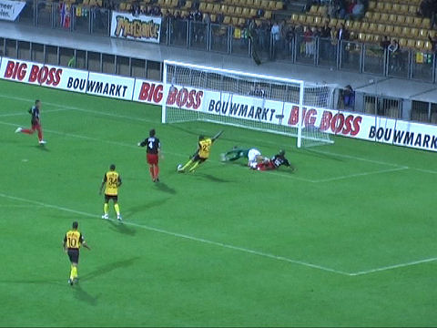
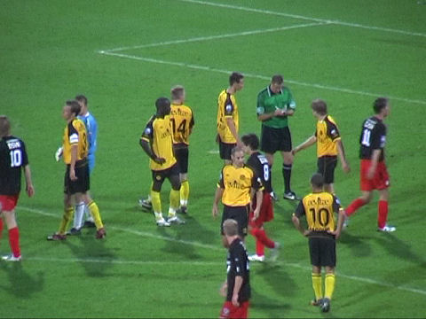
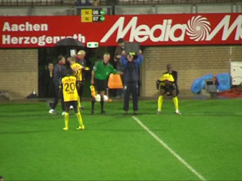

|
Roda JC - Excelsior (3-3) 29 september 2007
|
Alsof "links" me niet al genoeg kost!!
Een doek zeilt over de zuid-zijde.
Roda begint voortvarend met drie corners in drie minuten plus deze vrijetrap die
genomen wordt door Bodor. Het is een prima schot dat met moeite overgetikt wordt
door doelman Graafland
Janssen scoort uit een voorzet van Lamah: 1-0, (9').
Even later scoort Lamah zelf: 2-0, (13').
Lamah weet precies waar hij zijn feestje moet vieren.

Nadat Lamah twee verdedigers uitkapt kan hij de bal in het lege doel schieten.
Het
is ongelooflijk maar hij schiet enorm hoog over.
Geen gebrek aan gele kaarten. Hier gaat Matondo op de bon.
Een kopbal van Saeijs wordt van de doellijn gehaald.
Niet lang na de rust gaat een kopbal van Saeijs er wèl in: 3-0, (49').
Schwalbe van Van Guldener. Scheidsrechter Van Boekel geeft een strafschop.
Den Ouden schiet het cadeautje voorbij Castro: 3-1, (57').
Van Guldener versiert een tweede pingel nadat hij door De Jong wordt neergelegd.

Terwijl Van Boekel zijn administratie bijhoudt gaat Den Ouden zich opmaken voor
het nemen van zijn tweede strafschop.
Deze keer schiet hij de bal over het doel.
Een vrijetrap van De Fauw knalt op de paal.
Even later schiet Lamah op de paal.

Na een dekkingsfout van De Jong kan Voskamp 2-3 inschuiven, (78').

Een driedubbele wissel haalt niks uit als de angst in de ploeg is geslopen.
Voskamp kopt in de slotminuut de gelijkmaker binnen: 3-3, (90').
De tien meegereisde Excelsiorsupporters vieren hun eerste competitie-punt.
Onze spelers druipen af onder een fluitconcert.
Tegen de verwachting in komt een record aantal spelers naar de Kickoff.
(foto: dennis richter)
Aanwezige spelers: Matondo, Lamah, Tioté, Kah, Tyton, Vandamme, Saeijs,
Oper,
De Jong, Bodor, De Fauw, Hadouir, Senden, Van Tornhout, Sibum.
(foto: dennis richter)
© Koempels Pleasure Dome
|